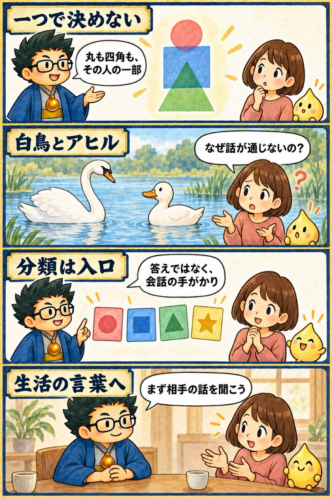

2025年 無料講座・第1回
生きづらさは「みにくいアヒルの子現象」かも？
この回の要約
「話が合わない」は、どちらかが間違っているからとは限りません。
この回では、「みにくいアヒルの子」を比喩に、感じ方や得意分野の違いから起きるすれ違いを整理します。一つの占術で人を決めず、複数の見方を重ね、相手に届く生活の言葉へ翻訳することが中心テーマです。
講義内の未来予測や神話的な説明は、講師の見立て・比喩として分けて掲載しています。
4コマ漫画でつかむ

タイムスタンプ
時間を押すと、上の動画がその場面から再生されます。
覚えておきたいこと
- 一つの占術や分類だけで、人の全体像を断定しない。
- 「合わない」を善悪にせず、前提・感覚・言葉の違いとして確かめる。
- 分類結果を伝えたあとに、本人の実感と相談内容を聞く。
- 相手の弱みに見える特徴を、役割・才能・使い方へ翻訳する。
- 頼まれていない助言を急がず、相手が必要としている一歩を探す。
復習ポイント
講義内の占術上の説明・時代の読み・象徴的な解釈は、講師の見立てです。客観的な事実や将来を保証するものではありません。